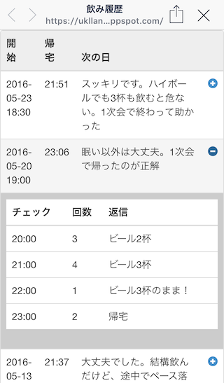
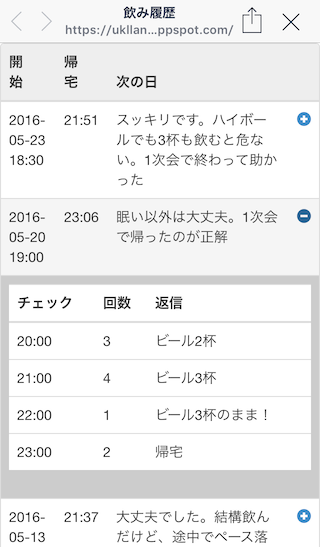

大人飲み支援LINE Bot (ID: @iiw1350z)
楽しい飲みのために！
概要
飲み会などでついつい飲みすぎて次の日に後悔した経験は多くの人があると思います。
このLINE Botは自分の適量を知って楽しく大人飲みできるよう支援するBotです。飲み会の状況をメッセージしていくだけで自分の飲み方の傾向などを後で振り返ることができます。
能動的に指示しない限り、勝手にメッセージを送ってくることもありませんので、まずは友だちに追加してみて試してください！
基本的な使い方
飲み会の前に
以下のようなメッセージを送ってください。飲むや飲みなどのキーワードから飲み会の通知と解釈し、開始日時を認識し、確認のメッセージを返信します。また前回の飲みがあればその飲みの状況も知らせてくれます。
- 19時から飲む
- 1830から飲み会
- 5/20 18:30から飲み会
飲み会が始まったら
開始後、約1時間間隔で様子を確認するメッセージを送信します（5時間後まで）。現在の様子を返信してください。飲んだお酒の種類と量を送ると、これまでの合計を教えてくれ、次回以降の飲みの際にこのデータを使います。
返信がない場合、5分毎に2-3回メッセージを再送します。すでに帰宅した場合にはその旨返信してください。その時点で確認のメッセージは送られなくなります。
- ビールを2杯、ハイボールを3杯
帰宅したら
確認メッセージへの返信か、それ以外のメッセージで以下のようなメッセージを送ってください。
- 帰宅した
翌日
翌日昼に昨日の飲みに対する、現在の様子を確認するメッセージを送信します。現在の様子を返信してください。後から飲みの履歴を確認する際に使われます。
- すっきり
- 二日酔い
飲み会をキャンセルする
飲み会をメッセージした後に飲み会がキャンセルされた場合は以下のようなメッセージを送ってください。
- やめ
過去の飲み会を確認する
過去の飲み会を確認したい場合は以下のようなメッセージを送ってください。過去で最悪の飲み（翌日の様子から判定します）を表示し、またその他の過去の飲みを確認できるページのURLが返信されます。そのURLをクリックしてください。
- 過去の飲み
 

使い方を確認する
使い方を確認するには、以下のようなメッセージを送ってください。
- ?